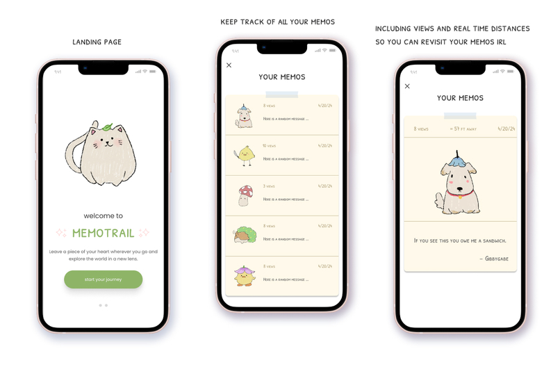
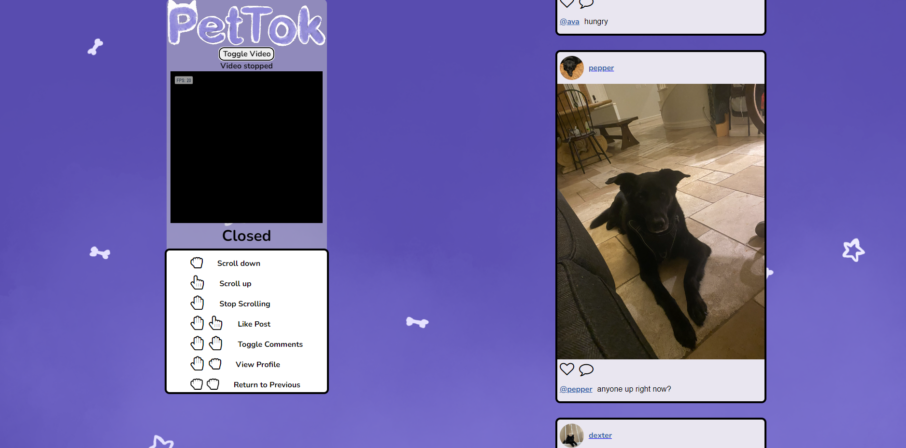

Valdle
Valdle is an engaging Valorant trivia website featuring various game modes. During its development, I learned API integration and full-stack web development, inspired by Wordle and Loldle.

Memotrail
MemoTrail is a mobile-first web app using augmented reality to overlay digital messages onto real-world locations. Users can leave and discover messages tied to specific places. I worked on UI design and frontend implementation.

Gym Scheduler
This is a website designed for a gym that allows users to reserve courts, rent equipment, and manage their accounts. blahblahblahblah

PetTok
PetTok is a social media platform designed for pets. This website also utilizes hand tracking for extra accessibility options to navigate around the app.

Valdle
Valdle is an engaging Valorant trivia website featuring various game modes. During its development, I learned API integration and full-stack web development, inspired by Wordle and Loldle.
Valdle
Valdle is an engaging Valorant trivia website featuring various game modes. During its development, I learned API integration and full-stack web development, inspired by Wordle and Loldle.